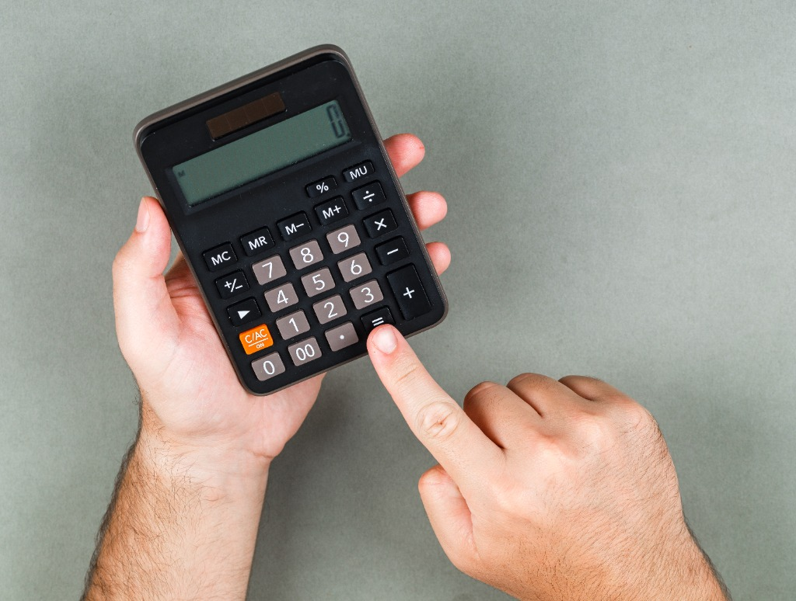

Pantau dan Kembangkan Usaha dengan Sat-set!
Bisnis yang menggunakan pencatatan terstruktur UTERA 70% lebih cepat mendapatkan persetujuan fasilitas kredit modal kerja dari perbankan dan koperasi.
Buku Kas Warung Real-Time
Catat pemasukan dan pengeluaran harian dalam hitungan detik. Tanpa istilah akuntansi rumit, saldo laba bersih kas operasional langsung diperbarui otomatis.
Engine Skor Kelayakan (0–100)
Algoritma otomatis berbasis formula PRD resmi. Menguji 4 parameter objektif: konsistensi pencatatan, pertumbuhan omzet, margin laba, dan stabilitas kas 6 bulan.
Simulasi Guardrail Batas 30% Kas
Cegah jeratan cicilan yang mengancam likuiditas usaha. Sistem memvalidasi ketat agar total angsuran bulanan tidak melampaui 30% dari rata-rata laba kas riil.

Kelola keuangan usaha Anda dengan presisi dan kepercayaan
Kami membantu Anda mencatat setiap pemasukan dan pengeluaran secara akurat sehingga laporan keuangan Anda siap untuk pengajuan kredit bank kapan saja.
PelajariDapatkan data analitik menarik dari setiap transaksi bisnis Anda
Algoritma otomatis UTERA menganalisis 4 parameter objektif — konsistensi, pertumbuhan omzet, margin laba, dan stabilitas kas — untuk menghasilkan Skor PRD yang diakui perbankan.
Buka Skor KelayakanBergabung bersama ribuan pelaku UMKM yang telah berkembang
Jutaan transaksi dicatat setiap bulan oleh pelaku usaha yang menggunakan UTERA. Mereka membuktikan bahwa pembukuan yang rapi adalah kunci membuka akses permodalan lebih cepat.
Mulai SekarangCoba Langsung Sistemnya
Eksplorasi bagaimana catatan transaksi kas harian mempengaruhi Skor Kelayakan pembiayaan dan batas aman cicilan pinjaman koperasi Anda secara instan.
Pilihan Plafon KUR Bank Sesuai Kapasitas Usaha
Mengacu pada ketentuan Permenko Perekonomian No. 1 Tahun 2023 dan pedoman penyaluran KUR BRI 2026.
KUR Super Mikro
Cocok untuk tambahan modal awal dan pengadaan peralatan kerja bagi usaha mikro yang baru berjalan.
- Suku bunga bersubsidi 3% efektif per tahun
- Tanpa agunan fisik tambahan
- Cukup NIB atau Surat Keterangan Usaha (SKU)
- Tenor kredit modal kerja hingga 36 bulan
KUR Mikro
Skema paling ideal bagi warung, katering, dan bengkel yang membutuhkan stok dan bahan baku reguler.
- Suku bunga bersubsidi 6% efektif per tahun
- Evaluasi catatan kas minimal 6 bulan berturut-turut
- Rekomendasi Skor Kelayakan UTERA: BAIK (≥ 70)
- Laporan keuangan PDF UTERA siap dilampirkan
KUR Kecil
Dikhususkan untuk usaha yang siap membuka cabang baru atau pengadaan armada logistik produksi.
- Suku bunga bertahap 6% s.d 9% efektif
- Wajib melampirkan NIB aktif dan NPWP usaha
- Agunan pokok sesuai dengan ketentuan bank pelaksana
- Tenor investasi hingga 60 bulan (5 tahun)
Dipercaya oleh Pelaku Usaha di Seluruh Indonesia
Bagaimana kepastian pembukuan satu sumber data membantu pengusaha mikro mendapatkan persetujuan modal kerja.
« Sejak menggunakan UTERA, pembukuan kas warung saya tidak lagi tercecer di sobekan nota. Saat mengajukan KUR Mikro Rp 30 Juta, pihak bank langsung menyetujui karena laporan arus kas 6 bulan rapi dan skor kelayakan saya 84. »
« Fitur simulasi batas 30% koperasi sangat menyelematkan usaha bengkel saya. Saya jadi tahu persis berapa cicilan yang aman tanpa mengganggu uang belanja suku cadang bulanan. »
« Panduan NIB OSS dan sertifikasi halal UTERA membuat izin usaha saya selesai dalam 1 minggu. Ekspor laporan laba rugi format PDF-nya langsung diterima tanpa revisi oleh koperasi. »